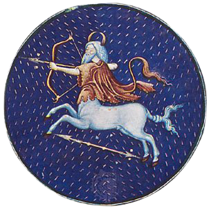

|

|
Sagittarius, (Latin: “Archer”) in astronomy,
zodiacal constellation in the southern sky lying
between Capricornus and Scorpius, at about 19
hours right ascension and 25° south declination.
The centre of the Milky Way Galaxy lies in the
radio source Sagittarius A*. Near the western
border of Sagittarius is the winter solstice, the
southernmost point reached by the Sun in its
apparent annual journey among the stars. This
constellation also contains the Lagoon and Trifid
nebulas. The brightest star is Kaus Australis (from
the Arabic for “bow” and the Latin for “southern,”
respectively; it is also called Epsilon Sagittarii), with
a magnitude of 1.9. Many of the stars are arranged
in the prominent asterism called the Teapot. In astrology,
Sagittarius is the ninth sign of the zodiac, considered as
governing the period from about November 22 to about
December 21. It is represented either by a centaur shooting
a bow and arrow or by an arrow drawn across a bow. The
identification of Sagittarius as a mounted archer was made
by the Babylonians as early as the 11th century BCE.
|